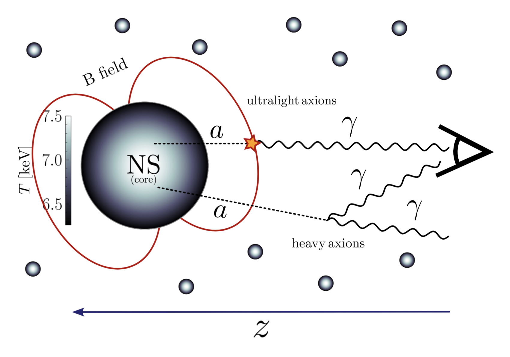
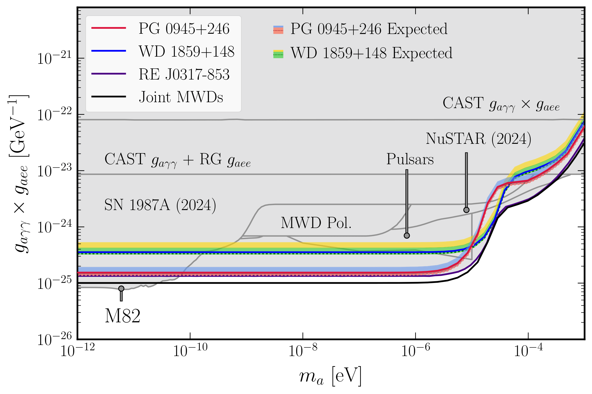
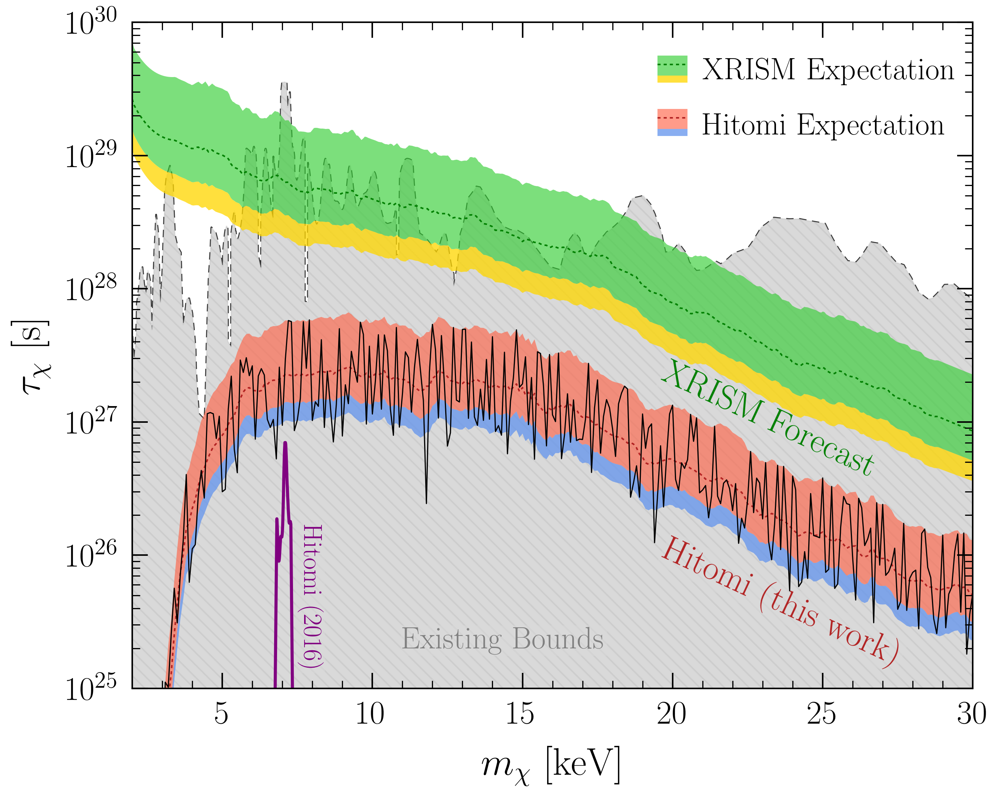

Research
We know that dark matter (DM) is a real phenomenon observable through a variety of astrophysical and cosmological probes, but what is it really? My research revolves trying to answer this question at the particle level. Could dark matter be some yet unseen fundamental particle beyond the Standard Model (SM) of physics? What would be its properties?
I work in a field broadly known as 'indirect detection', which searches for signatures of hypothetical dark matter particle candidates through astrophysics. What this means is that given some dark matter particle model in mind (popular candidates these days include the axion, higgsinos, or sterile neutrinos), we can try to predict evidence of this model through astrophysical phenomena (stars, galaxies, cosmology, etc.), combined with a variety of often novel and/or intensive statistical and data analysis technqiues. The ideas and methods are as diverse as the entire field of astrophysics, and given that the possible dark matter candidate mass can span roughly ~50 orders of magnitude, there's much to explore!
Check out some examples of my recent and not-so-recent work here, as well as tangential and past interests that may or may not be related to the dark matter question.
Cosmological Neutron Stars Produce Diffuse Axion Signatures
 Some of the strongest constraints on axions and axion-like particles come from the extreme conditions within neutron stars (NSs), extremely compact objects held up by neutron degneracy pressure and other nuclear effects. In this work, we study the possibility of a diffuse axion signal coming from the cosmological NS population, which are all NSs produced throughout cosmic history. If axions were to exist, they would be produced from these extreme objects and make up an axion-induced X-ray background permeating our universe today. We search for the signals coming from ultralight axions converting in external NS magnetospheres, as well as the decay of heavier axions into photons produced at a later cosmic epoch, deriving stringent constraints on axion coupling parameters in both scenarios (particularly for our leading heavy axion search where the mass ma is within a few orders of magnitude of a keV) with cosmic X-ray background data from NuSTAR, HEAO, Swift, and INTEGRAL. We utilize NS cooling simulations and magnetic field evolution models, study the effects of superfluidity in NSs, make projections for future telescopes, and conclude that the cosmic NSs analyzed here are an exciting avenue to probe deeper and deeper into axion parameter space across an impressively wide range of axion masses.
Read the full story: 2512.15849, with a Video Abstract here.
New Axion Searches in Magnetic White Dwarfs (MWDs)
 It has been known that Magnetic White Dwarfs (MWDs), or white dwarfs with magnetospheres on the order of ~hundreds of MG, could be excellent laboratories for axion physics. Low mass axion-like particles (ALPs) can be produced within the MWD core through the axion-electron coupling, and then convert to X-ray photons in the strong magnetospheres of MWDs, through the axion-photon coupling. My collaborators and I recently identified two new MWDs (PG 0945+246 and WD 1859+148) which have the potential to further constrain the axion-electron axion-photon coupling combination. Using dedicated Chandra observations of these MWDs, we set stringent joint constraints (combined with previous observations of MWD RE J0317-853) on the low-mass axion parameter space when. Further, we demonstrate the slow degradation of the Chandra telescope over the years, which will likely limit prospects of similar searches for axions from MWDs in the future. Interestingly, we also find low-energy non-axion emission from WD 1859+148, which likely comes from magnetosphere effects.
Read the full story: 2411.05041, with a Video Abstract here.
Axion Production in Galactic Stellar Populations
 Ultralight axions are strongly-motivated particle candidates, often extensively
searched for in astrophysical data where their feeble interactions with the SM can be
magnified. In our main work here, we consider the possibility that axions can be produced
thermally in stellar interiors (through the axion-photon coupling), and then can
convert to X-ray photons in galactic magnetic fields. Novel in our work, we sum over
full stellar populations in select galaxies when calculating the expected axion-induced
flux, and extract robust magnetic field profiles from the IllustrisTNG simulations.
Analyzing NuSTAR data toward the starburst galaxy M82 and the Virgo-cluster central galaxy M87,
we find no evidence for axions and instead set exciting leading constraints on the axion-photon couling
for axion masses below roughly ~10-10 eV.
Ultralight axions are strongly-motivated particle candidates, often extensively
searched for in astrophysical data where their feeble interactions with the SM can be
magnified. In our main work here, we consider the possibility that axions can be produced
thermally in stellar interiors (through the axion-photon coupling), and then can
convert to X-ray photons in galactic magnetic fields. Novel in our work, we sum over
full stellar populations in select galaxies when calculating the expected axion-induced
flux, and extract robust magnetic field profiles from the IllustrisTNG simulations.
Analyzing NuSTAR data toward the starburst galaxy M82 and the Virgo-cluster central galaxy M87,
we find no evidence for axions and instead set exciting leading constraints on the axion-photon couling
for axion masses below roughly ~10-10 eV.
Read the full story: 2404.14476, with a Video Abstract here.
This theme of leveraging galactic stellar populations for axion searches is useful in other contexts as well. In several follow-up works, we next considered how to probe the axion-electron coupling through other production processes like electron bremsstrahlung and Compton scattering for axion production in stars. We also searched for particular nuclear de-excitation lines from M1 transitions of various isotopes, giving a distinct X-ray line signature induced by the axion-nucleon coupling. In both of these scenarios, we derive stringent constraints on various axion coupling parameters and also explore other galactic stellar populations like M31 and our own Milky Way bulge. Indeed, we find that stellar populations are incredibly powerful when conducting axion searches in a multitude of scenarios.
Read the axion-electron story: 2503.09682,
with a Video Abstract here.
Read the axion-nucleon line story: 2509.03569,
with a Video Abstract here.
Dark Matter Decay with Hitomi and XRISM
 Dark matter, in principle, is all around us. Searching across the sky, one can hypothesize that dark matter can generically decay into photons which may be detectable as a distinct line-like signal. In this work we narrow our scope to X-ray line searches, and re-examine the ability of the past Hitomi telescope in searching for DM decay, while making projections for its successor, XRISM. The Hitomi mission was unfortunately destroyed in orbit in 2016, but we show that the small amount of data it did collect can be optimized for DM decay searches using a new technique, in which we target 'blank sky observations', which are regions of the sky with minimal light and background (as opposed to high density regions which may also have high backgrounds, which were more frequently analyzed). We show, using Hitomi as proof-of-principle, that this blank sky technique gives substantial improvements in constraining the DM decay lifetime, and extend this formalism to the (then upcoming) XRISM mission, which was recently launched in September 2024. We projected that XRISM, with its impressive high-resolution spectrometers, will have leading sensitivity to DM decay for masses between roughly 1 to 18 keV. This would have important implications for certain models of DM such as sterile neutrinos and heavy axions.
Read the full story: 2305.17160, with a Video Abstract here.
Higher-Dimensional QFT and Magnetic "Curvepoles"
Standard QED in five dimensions, with interacting photons and fermions, is not perturbatively renormalizable. However, the study of QFTs in dimensions higher than four have been increasingly motivated due to string theory, which has suggested the existence of interacting QFTs in five and six dimensions. These particular QFTs can behave like interacting gauge theories in the low-energy limit, and have remained interesting objects of study for decades. In this (ongoing) work, which I became involved with in my undergraduate Senior Honors Thesis, we develop a novel QFT which behaves similar to 5D QED, but, in contrast, is renormalizable. This is due to fermion fields whose quanta are "curvepoles," which are higher-dimensional analogs of magnetic dipoles. These curvepoles also have roles in describing D-branes in strong fluxes, and theories which construct new models of UV completion for lower-dimensional QFTs. Full story, in a preprint form, out (hopefully) soon!